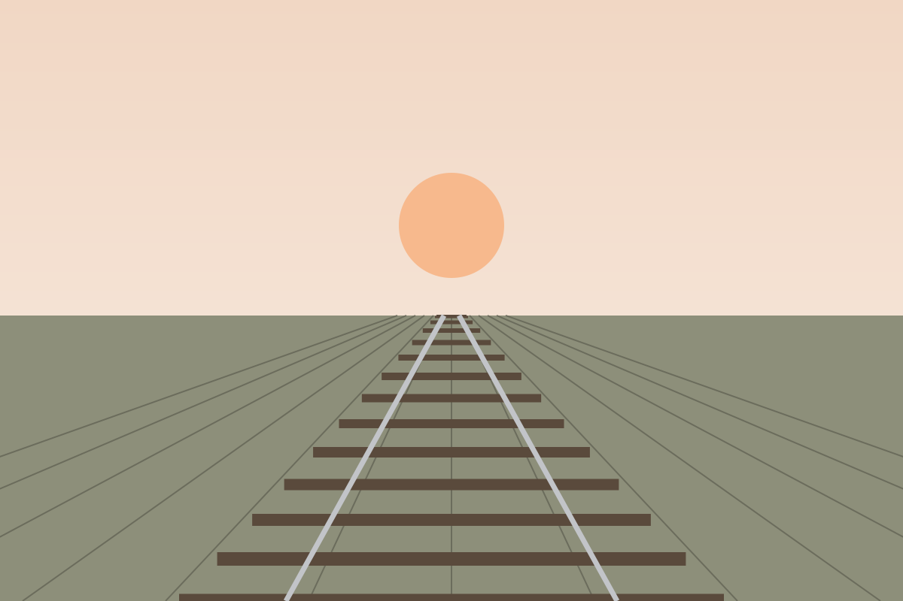
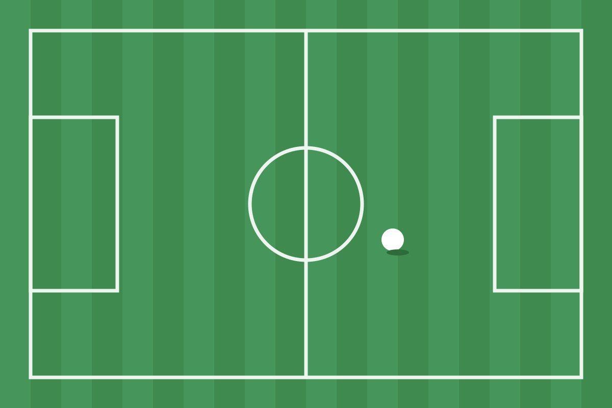
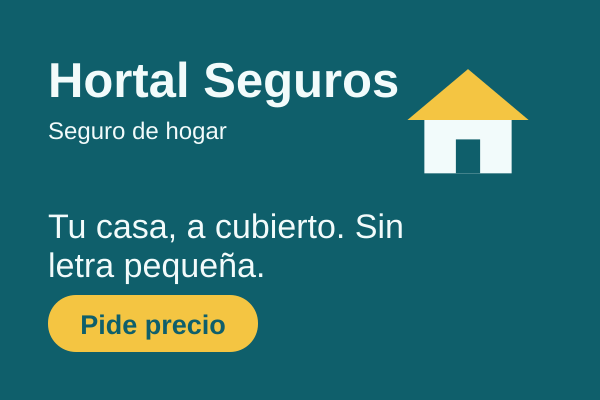
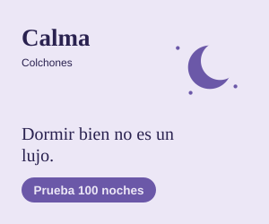
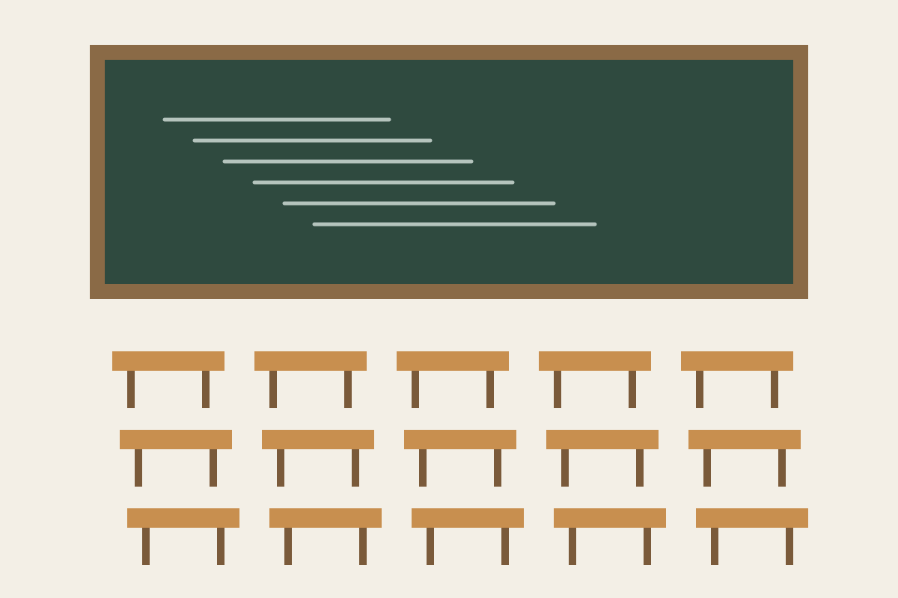

Última hora
Noticia de apertura
Lo más importante




Publicidad Ver menos anuncios

Opinión
Publicidad Ver menos anuncios

En profundidad

Ciencia
Con el apoyo de

Periódico independiente de la mañana
Publicidad Ver menos anuncios

Publicidad Ver menos anuncios




Publicidad Ver menos anuncios

Publicidad Ver menos anuncios

Con el apoyo de
Publicidad Ver menos anuncios